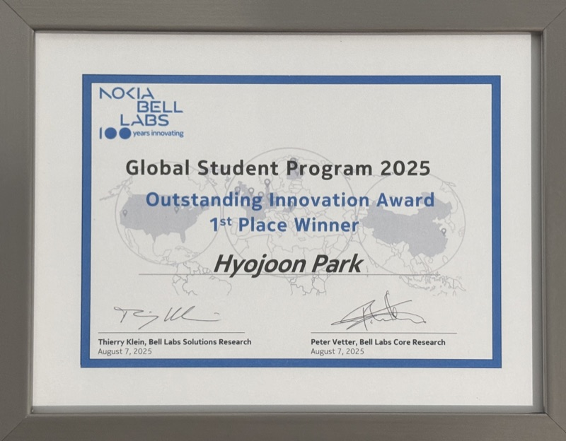

-
Student Researcher
Google
- Developed a real-time, self-supervised neural hair simulator for digital humans, focusing on efficient physics-based animation for XR (publication-track results in progress)
Technical Contributions
- Designed a GRU-based motion encoder to retain motion history and capture hair inertia, including natural swinging and settling.
- Encoded local and global hair groom structure with a latent transformer, scaling linearly rather than quadratically in strand count.
- Built a StyleGAN2-inspired modulated MLP decoder conditioned on body shape, hairstyle, and motion history for hair animation.
- Trained the neural hair simulator with volumetric elastic, inertial, and collision losses for richer dynamics and faster training.
-
Industrial Metaverse Intern
- 1st Place
Winner

among 100+ global interns — project "Empowering Digital Twins with Precise Physical Registration and Language-Awareness" - Renders 3D scenes in real-time using 3D Gaussian Splatting with precise physical registration (scale and orientation) and language features for natural-language object queries
- Follow-up work studies how capture geometry affects 3DGS reconstruction quality (publication-track results in progress)
Technical Contributions
- Aligned the digital twin with real-world coordinates using ChArUco board correspondences, linear triangulation, nonlinear reprojection-error minimization, and Umeyama similarity alignment.
- Embedded language features in each 3D Gaussian and applied DBSCAN clustering for real-time, text-guided 3D object segmentation.
Capture
Real-time Text-based 3DGS Segmentation
- 1st Place
Winner
-

Software Intern – Physics-Based Simulations
- Built a single-image 3D face reconstruction framework generalizing across ages (infants to elderly)
- Controllable re-aging and de-aging via differentiable rendering and a GAN-based objective
Technical Contributions
- Generated synthetic 3D face meshes from infancy to old age by transferring identity-specific deformations from scanned faces to age-specific face templates.
- Learned the 3DMM identity basis using PCA on skull-aligned face meshes centered on age-specific reference shapes.
- Trained an end-to-end network to predict 3DMM identity and age parameters from a single image, using the pretrained MiVOLO age estimator to supply an age prior.
-

Graduate Research Assistant
University of Utah (Prof. Ladislav Kavan)
- Project “Capturing Detailed Deformations of Moving Human Bodies” — SIGGRAPH 2021 [paper]
- Built and open-sourced a multi-view camera calibration framework (bundle adjustment, ML-based outlier detection) tracking 1,000+ labeled points for detailed reconstruction of moving human bodies github
Technical Contributions
- Built an end-to-end C++ and Python pipeline for multi-camera calibration using checkerboard corner detection and bundle adjustment with Ceres Solver.
- Built a VAE-based outlier detector to filter erroneous checkerboard corners and improve camera calibration.
- Trained a CNN corner detector for a body reconstruction pipeline that rejects invalid image patches, recognizes two-letter codes on the capture suit, and triangulates labeled corners.
-

Research Intern
Korea Institute of Science and Technology (KIST)
- Developed a VR hand-rendering framework for wearable fingertip-tracking devices, using motion retargeting and inverse-kinematics constraints for full hand pose and grasping accuracy
- Project “Adaptive Precision-Enhancing Hand Rendering for Wearable Fingertip Tracking Devices” — IROS 2020 [paper]
Technical Contributions
- Calibrated virtual hand size using fingertip measurements, tracking-device geometry, and SVD-based similarity alignment.
- Retargeted finger joint angles using per-joint scaling and offsets calibrated from open-hand and grasping poses to align rendered and intended hand poses.
- Extended the FABRIK IK solver with planar hinge constraints to prevent unnatural finger bending during real-time hand reconstruction.
-
Military Interpreter (육군 영어 어학병)
Republic of Korea Army
- Completed the full 21 months of mandatory military service as a military English interpreter